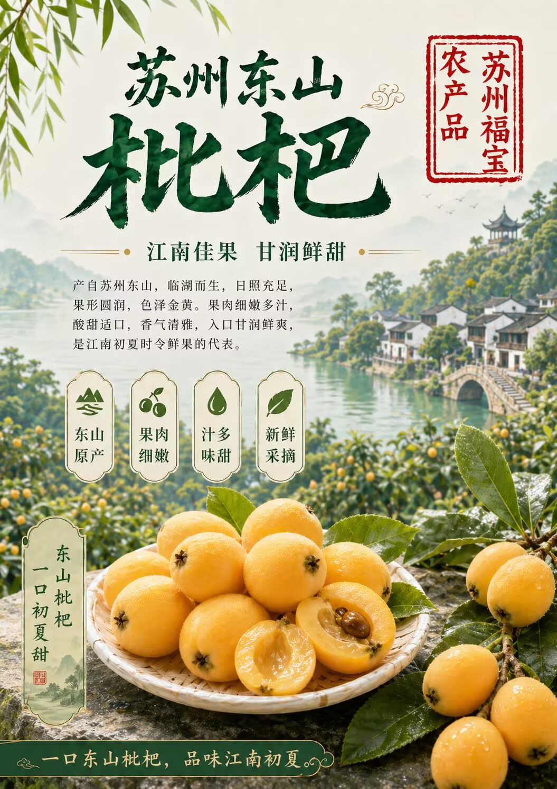
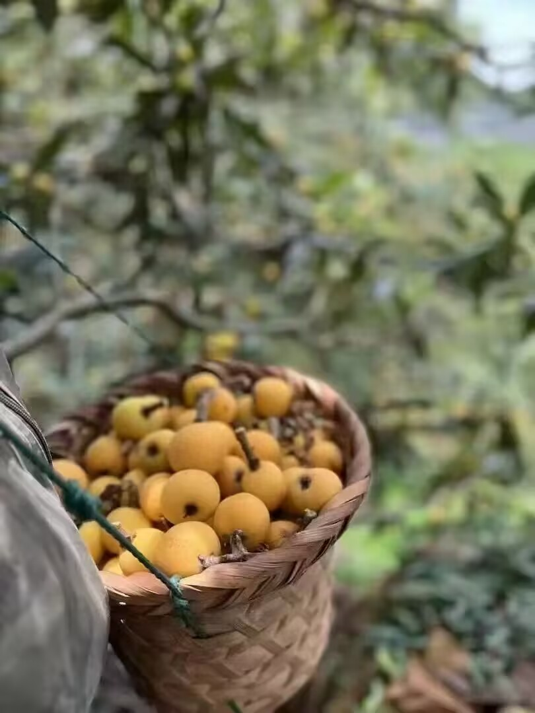
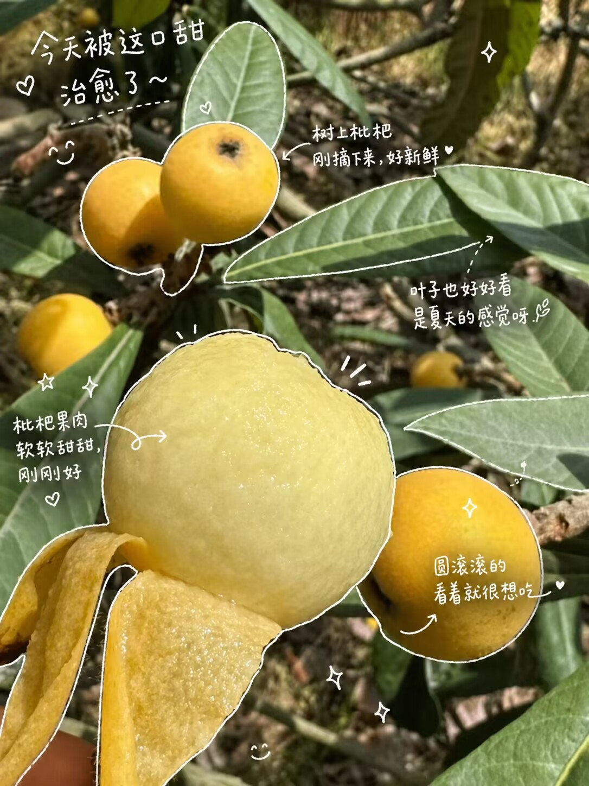
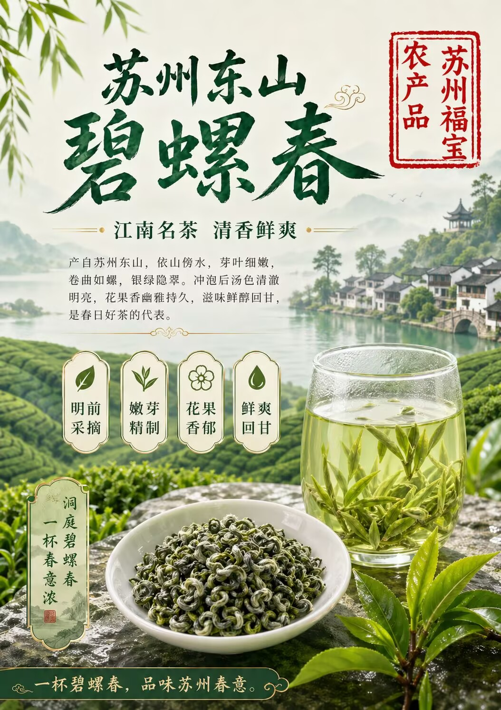
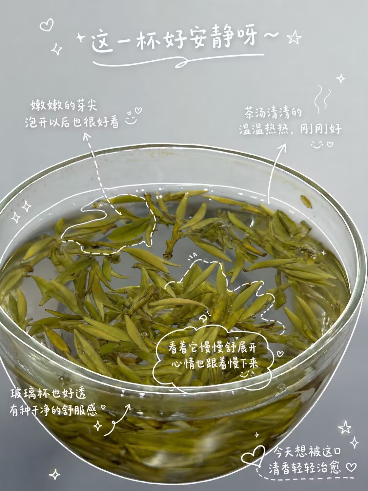
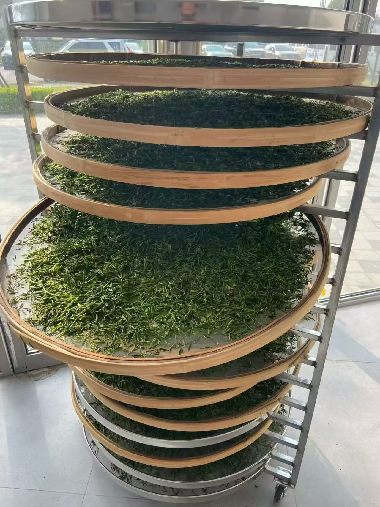

太湖水汽与山地日照
临湖果园昼夜温差温和，果实成熟更均匀，甜度、香气和水分都有稳定表现。
临太湖而生，依山水成味。用一颗初夏枇杷与一杯春日碧螺春，介绍苏州东山的清甜与清香。
东山枇杷色泽金黄，果肉细嫩多汁，酸甜适口。初夏成熟时，果香清雅，入口甘润鲜爽。



临湖果园昼夜温差温和，果实成熟更均匀，甜度、香气和水分都有稳定表现。
页面可用于当季预售、社区团购或礼盒介绍，重点突出产地、口感和采摘新鲜度。
东山碧螺春芽叶细嫩，卷曲如螺，银绿隐翠。冲泡后汤色清澈明亮，花果香幽雅，滋味鲜醇回甘。



茶树与果木相伴，形成碧螺春常被称道的清幽花果香，适合做高端春茶介绍。
适合用玻璃杯展示芽叶舒展，页面中可搭配规格、等级、采摘时间继续扩展。